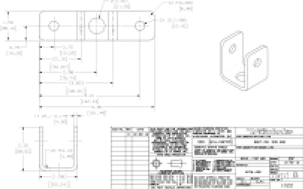
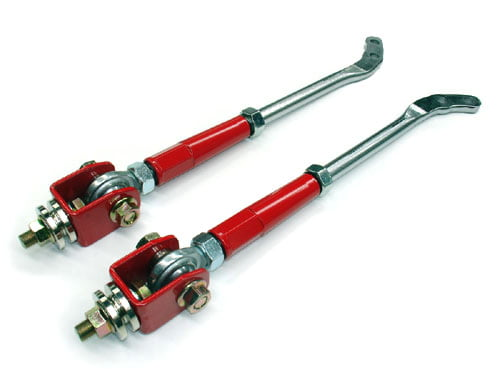

-
Hey guys!
I finally received a donation tension rod last month. I lost the other pair during the move, doh!
We've been trying to figure out a way to completely remove the rubber bushing mounting design, which even with harder bushing will still move, changing caster while braking and cornering.
So we came with a solution, after several designs, that will allow more movement, less friction, and upto 3degrees of caster adjustment.
We just got the CAD drawings done, and ordered up the raw materials to make the prototype.
I will keep you guys updated!
 -
Re: Stance Z31 Tension rods - R&D
Yea can use a double-nut (bushing sided washers/spacers will help distribute the load to the bracket and center it) on a clevis for the early style brackets and a standard rodend from there onward
Can't wait to see more goodies for the z31! -
Re: Stance Z31 Tension rods - R&D
Good to see development!
But on some criticism I never really thought the mounting/bracket side was or would be the most difficult thing in the design. The ae86 guys have been doing it for years. Some hardware and a U-bracket is not overly complicated.

Where I am interested is seeing the method you use to produce a cost effective end that mounts to the lower control arm. Only way I could think of was making a press die to form the angle needed. Basing it off of your s13 tension rod mounts that would add another machine, tool and process into the equation. More overhead=more cost, as the z31 market volumes are not the same as s13s.86na - BlueZ
Shiro #366 - Kouki Monster
85t - Mr Tickles -
Re: Stance Z31 Tension rods - R&D
Using the center hole position and centerline to base the two bends and smaller holes would be a cheaper design. The length of the overall bracket isnt critical. Though for prototyping its a lot easier to use two planes to measure the holes and bends. Sourcing/quality will be cheaper in volume production. Not trying to come off as a dick head, just something for thought. A lot of what I do daily is design sourcing.tfdave wrote:
86na - BlueZ
Shiro #366 - Kouki Monster
85t - Mr Tickles -
Re: Stance Z31 Tension rods - R&D
It'll be similar to the AE86 tension rod. The part that will connect to the lca will be aluminum, cnc. Honestly we have a general idea but haven't gotten to that part yet. We want to make the final design on the car, for clearances, etc. As far as the cost goes, Stance TC rods for S13/S14 is $230 msrp. It's not cheap, mainly because of the Aurora rod ends, as they are one of the more expensive ends on the market. But Aurora offers highest misalignment angle, perofrmance, and durability and pays for itself over the years. The actual rod ends we use have load rating that is 3 times higher than most of street cars will see, but that's one of the reasons why we have almost 0% warranty claims with our rod ends.adamvann3 wrote: Good to see development!
But on some criticism I never really thought the mounting/bracket side was or would be the most difficult thing in the design. The ae86 guys have been doing it for years. Some hardware and a U-bracket is not overly complicated.
Where I am interested is seeing the method you use to produce a cost effective end that mounts to the lower control arm. Only way I could think of was making a press die to form the angle needed. Basing it off of your s13 tension rod mounts that would add another machine, tool and process into the equation. More overhead=more cost, as the z31 market volumes are not the same as s13s.
We're trying to keep the cost down by using any parts off of the S13/S14 TC Rod, but we'll know more after the testing.
Many of the cheap taiwan,china links fail because of the rod ends. We have seen the ball literally pop out after few months. -
Re: Stance Z31 Tension rods - R&D
[quote]adamvann3 wrote:This U bracket was designed so that we could use S13/S14 TC Rod parts. Your constructive criticism and input is well received, no harm done.Originally posted by tfdave
-
Re: Stance Z31 Tension rods - R&D
Very interesting design. We actually are trying something pretty different for our solution, but there is nothing wrong with competing options!Chicks dig me, rust fears me. -
Re: Stance Z31 Tension rods - R&D
Glad to see this is coming together. Call me up when you guys need a car to test it on Dave. :lol:Usual Z31 suspect: Garage Queen (aka broken)

-
Re: Stance Z31 Tension rods - R&D
Subbing on this thread.DD:
86 Black Turbo 5spd
The Fallen:
84 red n/a auto Slicktop, 86 Black 2+2 n/a 5spd
Parting Currently:
86 White Turbo 5spd, 88 n/a 5spd, 84 AE, 88 Shiro #64
Garage Sale -
Re: Stance Z31 Tension rods - R&D
I have nothing to add, i just want to subscribe 1986 RB20 300xz 2+2
1986 RB20 300xz 2+2 -
Re: Stance Z31 Tension rods - R&D
Learn to use the subscribe button at the top of every thread.KevinA wrote: I have nothing to add, i just want to subscribe1985 NA2T(now RB) * 1988 SS x2 * 1984 AE x3 * 2006 350Z

-
Re: Stance Z31 Tension rods - R&D
I do it my way to bump the thread.DD:
86 Black Turbo 5spd
The Fallen:
84 red n/a auto Slicktop, 86 Black 2+2 n/a 5spd
Parting Currently:
86 White Turbo 5spd, 88 n/a 5spd, 84 AE, 88 Shiro #64
Garage Sale -
Re: Stance Z31 Tension rods - R&D
Going to ask Dave about the progress on these tonight. Will be at their shop picking some stuff up. Looks like they are still busy developing stuff for FRS/BRZ.
Edit: Dave wasn't there. I'm gonna give him a call tomorrow.Usual Z31 suspect: Garage Queen (aka broken)
-
Re: Stance Z31 Tension rods - R&D
Dave is at Tokyo Auto Salon studying on how to get rich off the FRS/BRZ chassis. :-)sigpic -
Re: Stance Z31 Tension rods - R&D
Dave needs me to come re- dimension and re-tolerance all his part drawings if they are done like that.
Then he can get rich."produce first.talk second."

Copyright © 2006–. All rights reserved. Privacy Policy